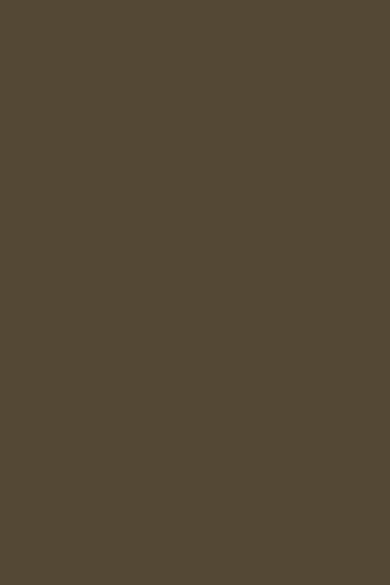
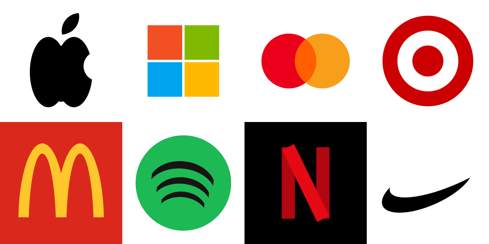

Samantha paints.
In Pixelmator Pro.
Describe an image. The real app builds it on your Mac, layer by layer. Every shape stays editable. It started with logos. Now it does the Mona Lisa. She runs on a Mac mini. No cloud needed.
The same algorithm, running live in your browser in a Mac window. On a Mac it drives Pixelmator Pro itself, and each rectangle lands as a real layer.
How it paints
One flat rectangle, the average color of the whole picture. Then find the cell that is most wrong and split it in four. Again. Again. Detail goes where the picture needs it: the face gets thousands of tiny layers, the sky gets six. Pixelmator has no brush command. It does not need one.
Who is holding the brush
For a painting, nobody. It is arithmetic, so it costs nothing to run. For a logo, a model picks the letters, the colors and the motif, and the script does the layout so it always comes out clean. Samantha does that on our own machine. The same script also works as a Claude skill.
Built inside the app

Mona Lisa. 3000 layers.

Logos from a JSON spec. A few seconds each.
Use it
git clone https://github.com/nulljosh/turing cd turing/pixelmator python3 pxm.py check python3 pxm.py paint photo.jpg --out painting.png --shapes 3000 python3 pxm.py logo examples/badge.json --gif build.gif
Needs macOS, Pixelmator Pro and python3. Nothing to install. As a Claude skill, symlink turing/pixelmator to ~/.claude/skills/pixelmator.